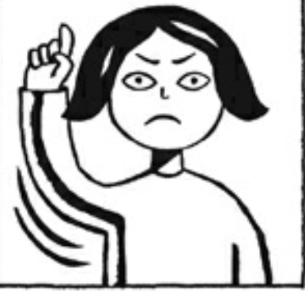
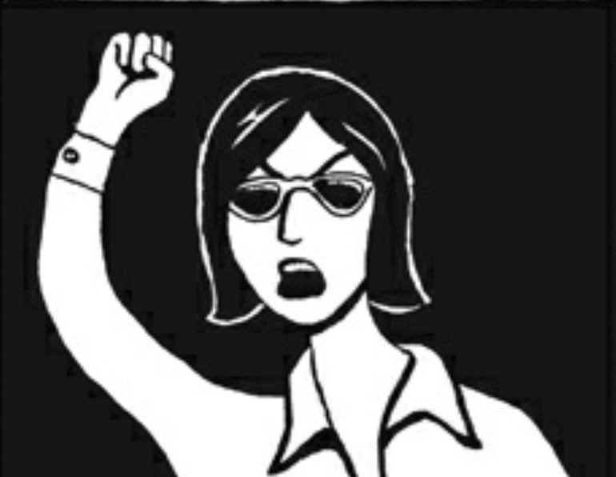
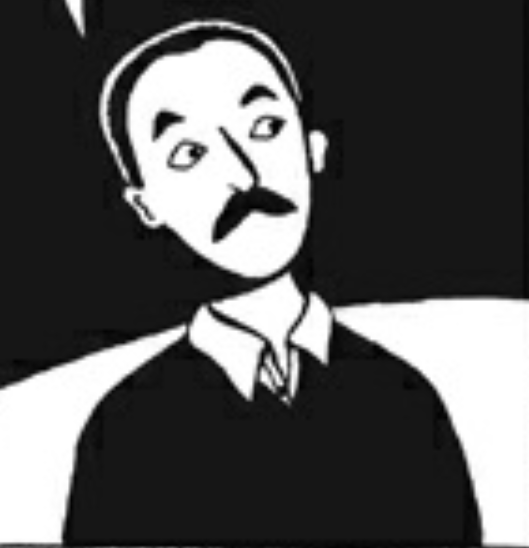
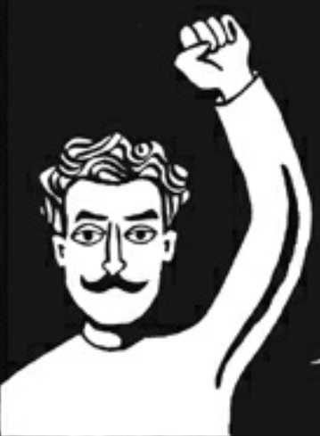
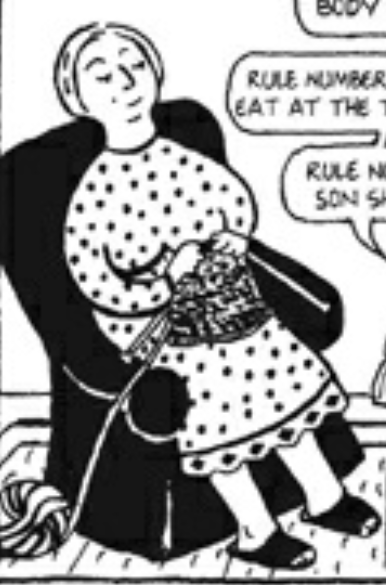

The Characters of Persepolis
Protagonist:

Our protagonist Marjane is a young and smart girl who has too live through a very diffiult time in her country's history. She is proud of being an Iranian but she does not agree with the government as what they are doing is wrong. She also breaks many rules the government had imposed such as acknowledging many things which they deemed false and also wearing "innapropiate" clothes. And for her education and safety at the end of the book she is sent to Austria, by both her parents.
Secondary Characters:

Marjane's mother is a very relaxed and leaniant when it comes to Marjane, letting her do things most other Iranian mothers wouldnt allow their daughthers to do. But she can also be strict, all to protect Marjane, but this doesnt mean she doesnt love her daughther. It is actually she loves her daughther a lot and even gets her some rock posters, that were banned in Iran, by being very resourceful and smuggling them in. She is also a revolutionary.

Marjane's father is a staucnh revolutionary in th ways he dislikes the government and oppses it and tries to find ways to make things better, and as he is a photographer also which means he sees eveything firsthand. He also loves Marjene very much and also his country, which he criticises the current government as it is destroying Iran and while in the beginning Marjane doesnt understand why her father criticises the government she soon learns why and understands her father much more.
Others:

Uncle Adosh was a revolutionary that helped in another revolution in a province, but had to escape to the U.S.S.R. after they were caught. He eventually came back and told the story to Marjane and stayed with them for a while. Unfortunately he was caught by the government and exceted on the charges of being a russian spy, these were false and it hurt Marjane very much.

Marjanes grandmother always believe in her even when the rest of the world did not, especially as she became her first disciple when Marjane said she was going to be the next prophet. She was always very caring all the way to the end comforting Marjane the day before she had to leave for Austria.